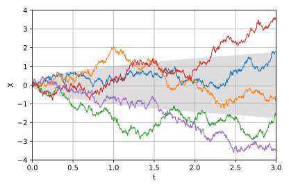

The Wiener process and the Geometric Brownian Motion (GBM) are mathematical models commonly used in various fields including physics, finance, biology and engineering to describe random movements: the movement of particles, the fluctuation of stock prices or the diffusion of substances in a fluid.
Wiener process
The Wiener process, also known as Brownian motion, is a mathematical model that describes a continuous-time stochastic process. It is named after the mathematician Norbert Wiener and the botanist Robert Brown, who independently discovered the phenomenon in the early 20th century.
It is
characterized by the property that the increment in any time interval is normally distributed.
The process is often used to model the random movements of particles in fluid or the stock prices in financial markets.
Key properties
- Continuous Paths: A Wiener process is a continuous function of time. This means that the path of the process does not have any jumps, and it is continuous over every interval of time.
- Independent Increments: The increments of the Wiener process over disjoint time intervals are independent of each other.
- Gaussian Increments: The increments of a Wiener process over a time interval are normally distributed (Gaussian). This means that the change in the process over a given time interval follows a normal distribution.
In other words, if you look at the difference in the process values at two different points in time, that difference will be a random variable that follows a normal distribution.
This means that the increments of a Wiener process are symmetrically distributed around their mean, and the distribution is bell-shaped (bell curve or Gaussian distribution).
- Stationary Increments: The statistical properties of the process remain the same over time. In other words, the distribution of increments is constant across different time intervals.
Moreover:
- Zero Mean: The process starts at zero at time zero, and its expected value at any time is also zero.
The Wiener process is often denoted by \(W(t)\), where \(t\) is time.
The increments \(W(t_2) - W(t_1)\) are normally distributed with mean zero and variance \(t_2 - t_1\).
Wiener processes play a crucial role in the development of stochastic calculus and are fundamental in the study of stochastic differential equations.

Five sampled processes, with expected standard deviation in gray.
Geometric Brownian Motion (GBM)
GBM is a continuous-time stochastic process that
generalizes the Wiener process by introducing a drift and a volatility parameter.
It is widely used to model the dynamics of stock prices and other processes in financial markets.
Key features
- Drift term: GBM incorporates a drift term, representing the average rate of return of the process.
- Volatility term: It includes a volatility term, representing the random fluctuations around the average rate of return.
The equation for GBM is often expressed as
\[dS(t) = \mu S(t)dt + \sigma S(t)dW(t)\]
where:
- \(S(t)\) is the asset price at time \(t\)
- \(\mu\) is the average rate of return
- \(\sigma\) is the volatility
- \(dW(t)\) is the Wiener process increment
The Wiener process is a special case of GBM when the drift term (\(\sigma\)) is zero, and only the volatility term (\(\sigma\)) is present.
Both the Wiener process and GBM are crucial in the modeling of random processes, especially in finance, and they provide valuable insights into understanding and predicting the behavior of dynamic systems. Researchers and practitioners use these models to analyze and make predictions about various stochastic processes.